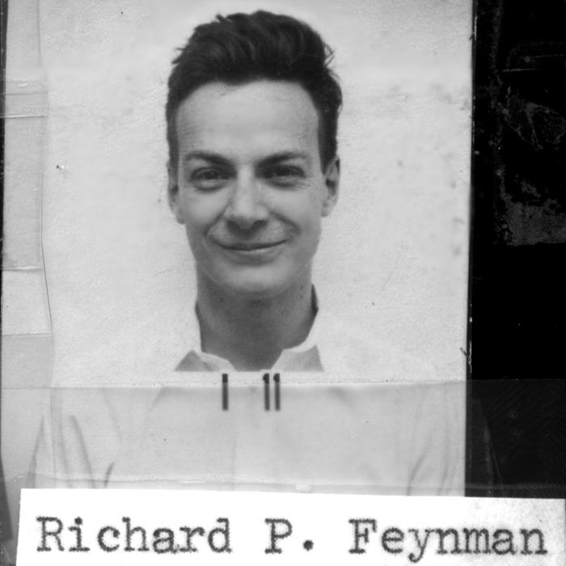
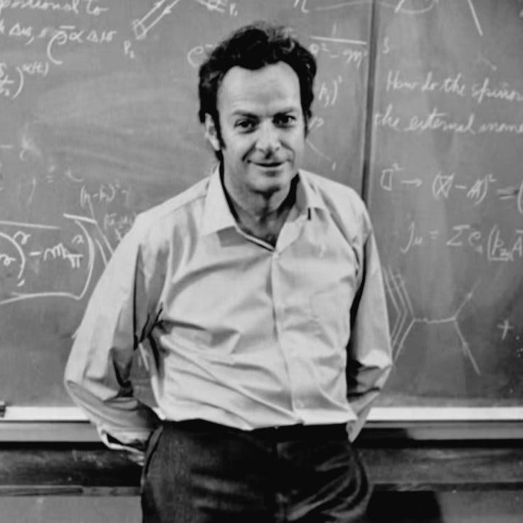
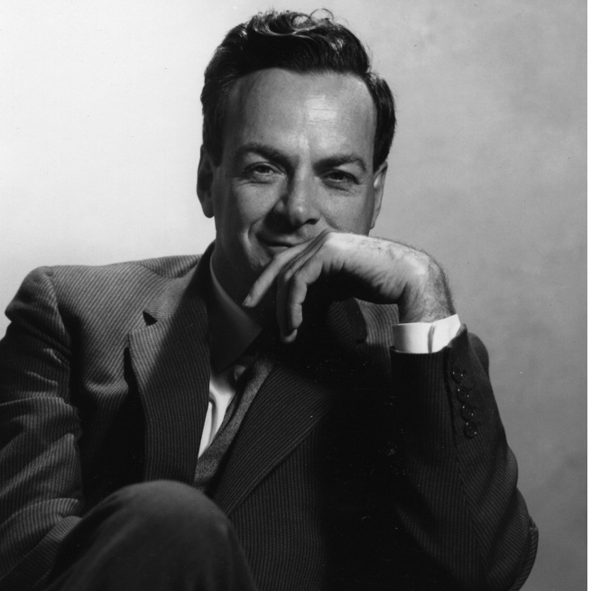

Richard Feynman was a theoretical physicist who made fundamental contributions to quantum electrodynamics. He shared the 1965 Nobel prize in Physics with Julian Schwinger and Shin'ichirari Tomonaga "for their fundamental work in quantum electrodynamics, with deep-ploughing consequences for the physics of elementary particles". He is most famously known for creating the Feynman diagram for better explaining how subatomic particles interect with one another and predicting what the possible outcomes of that interaction are. He is also remembered as an excellent science and physics teacher who could explain highly complicated topics in a very simple manner. He made of series of lectures about physics for people who had no background in that subject and he explained in a simple manner with excellent humour as well. Aside from physics Feynman was also very talented at mathematics, he scored in the top 5 of the Putnam competition. The Putnam mathematics competition is designed for undergraduate students majoring in mathematics and is considered one of the world's hardest (if not the hardest) mathematics competitions. Despite the fact that the students taking this competition are already very interested in math and some of the most talented math students, most get between a 0 or 1 out of 120 points.